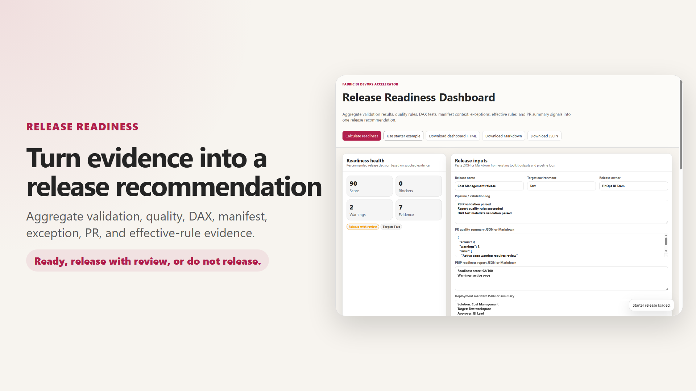
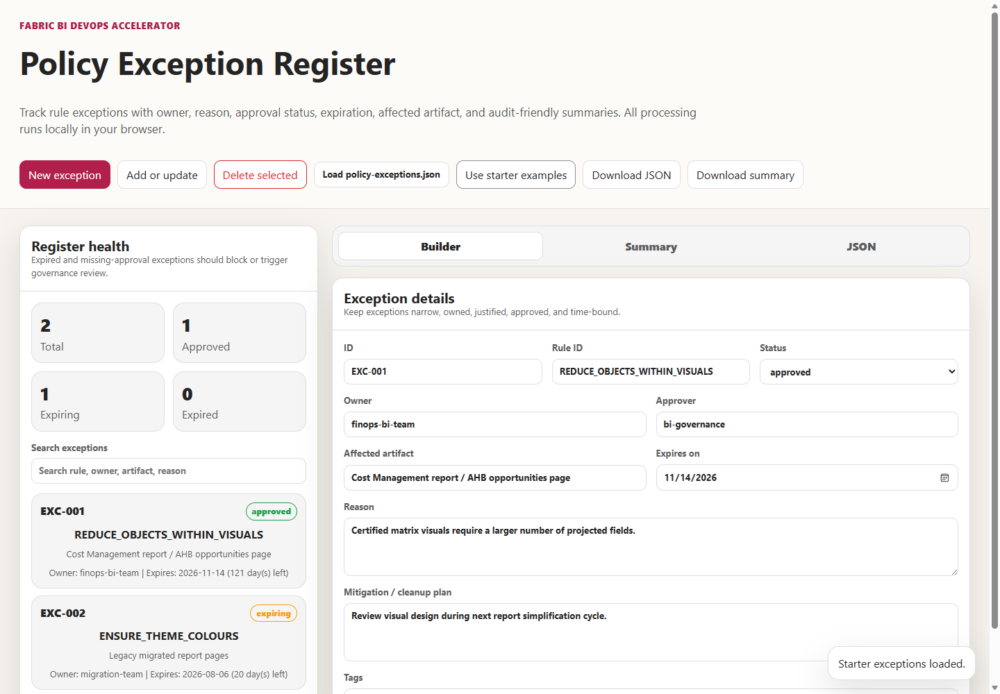

Enterprise BI DevOps with Microsoft Fabric: Governed Analytics at Scale
Modern analytics teams face an impossible choice: move fast or maintain control. Enterprise BI DevOps with Microsoft Fabric breaks that false choice by bringing enterprise software engineering practices to Power BI and Fabric delivery. Git integration, CI/CD automation, branch-aware quality enforcement, and deployment orchestration work together to give organizations a practical operating model that improves speed, confidence, and governance at scale.
This is not just a pipeline. It is a complete framework for treating Power BI and Fabric PBIP projects as first-class engineering assets with the same rigor applied to application code.


The Operating Model
At its core, the solution is a practical operating model for treating Power BI and Fabric artifacts like governed engineering assets. This means:
- For developers: Changes are validated early, tracked clearly, and promoted with minimal friction. Instead of manual checks and ad hoc handoffs, teams use reusable validation assets and automated workflows.
- For governance owners: Standards are defined once and enforced consistently. Quality rules are generated from policy profiles without requiring every report author to hand-edit JSON.
- For operations teams: Deployments are predictable and repeatable. Release intent is documented in source control, making approvals faster and rollbacks safer.
- For IT leaders: Governance scales with the organization. Risk is reduced through standardized patterns while enabling teams to move autonomously.

No-Code Governance Workflows
The toolkit provides interactive tools that make complex governance tasks accessible to non-technical stakeholders. Governance owners can define enterprise standards without writing code, while advanced users retain full control for custom scenarios.

The Enterprise Standards Builder allows teams to define report and dataset quality rules from policy profiles. This single-source-of-truth approach eliminates manual rule authoring and ensures consistency across all projects. Rules can then be tuned for specific branches or project exceptions through other tools in the toolkit.

The Deployment Manifest Builder makes release intent explicit and reviewable. Teams document ownership, target environments, approvals, rollback notes, and release assumptions in source control. This eliminates tribal knowledge and creates an audit trail for compliance.
Quality Assurance Before Review

The PBIP Project Readiness Scanner provides a pre-PR checkpoint. Teams can identify missing project structure, missing governance assets, or code hygiene issues before formal review begins. This catch-early approach reduces review cycles and accelerates time-to-merge.
Release Readiness and Evidence Aggregation

The Release Readiness Dashboard aggregates all validation evidence into a single decision point. It enforces that critical validation artifacts are present before release can proceed:
- Pipeline validation: Confirmed build and test success
- PBIP readiness: Pre-PR scanner results
- Deployment manifest: Release intent reviewed and approved
- DAX tests: Measure validation completed
Optional evidence (PR quality summaries, policy exceptions, effective rules) improves the score and provides reviewers with full context. The dashboard provides a clear recommendation: Ready to release, Release with review, or Do not release. File loading buttons and an export-ready JSON/Markdown output make it easy to integrate into existing approval workflows.
Policy Exceptions with Audit Trail
Policy Exception Register allows organizations to track exceptions in a way that is both flexible and auditable. Teams can document the owner, reason, approver, affected artifact, expiration date, and mitigation plan. Optional rule property overrides let teams adjust specific rule settings (logType, threshold, or disabled status) for approved exceptions, ensuring the CI/CD pipeline respects the approved exception while maintaining the audit record.

CI/CD Support Across Platforms
The toolkit includes pipeline generators for Azure DevOps, GitHub Actions, and GitLab CI/CD. Teams are not locked into a single platform—they can choose the CI/CD system that fits their organization and customize pipelines from a profile-driven template.

Measuring Adoption and Maturity
The Adoption Metrics Dashboard and supporting analytics help organizations track the maturity and impact of their analytics delivery practice:
- Active projects in the toolkit
- Platform usage patterns
- Rule maturity and coverage
- Release readiness scores over time
- Exception trends and drift detection
- Time-to-onboard for new projects
This instrumentation provides visibility into the effectiveness of the operating model and helps identify areas for improvement or further standardization.

What the Solution Helps Standardize
- Source-controlled PBIP project structure: Consistent folder layout, naming conventions, and metadata management.
- Branch-aware quality rules: Report and dataset quality checks that adapt to branch context (main vs. feature branches).
- DAX test metadata: Standardized format for documenting measure expectations, enabling reviewers to understand and validate business logic.
- Deployment manifests: Machine-readable release intent that includes ownership, target environments, approval chain, and rollback procedures.
- Pre-PR readiness checks: Automated validation of project structure, governance assets, and pipeline configuration before formal review.
- Release evidence aggregation: Mandatory validation artifacts (pipeline success, readiness scores, test results) collected in a single decision point.
- Policy exceptions: Temporary, auditable overrides to quality rules with owner, reason, approver, and expiration tracking.
- CI/CD patterns: Reusable pipeline definitions that work across Azure DevOps, GitHub Actions, and GitLab CI/CD.
- Adoption metrics: Instrumentation to track project growth, rule maturity, and delivery velocity.
Business Value
For Business Leaders: Faster time-to-insight, predictable delivery schedules, and reduced risk of failed deployments. Analytics teams can respond to business requests without sacrificing quality or audit trail.
For Analytics Leaders: Autonomous team operations, clear governance boundaries, and visibility into delivery health. The operating model scales from a single project to enterprise-wide practice without proportional increase in overhead.
For IT/Security: Compliance-ready audit logs, policy enforcement at the pipeline level, and ability to enforce organizational standards without constant manual intervention.
Getting Started
The toolkit is designed to be adopted incrementally. Teams can start by using the PBIP Readiness Scanner to establish a quality baseline, then add rule governance, deployment orchestration, and metrics tracking as the practice matures. The no-code tools and template-driven pipelines mean that adoption does not require deep DevOps expertise.
Enterprise BI DevOps with Microsoft Fabric is not about tooling—it is about creating an operating model that allows analytics teams to move fast, maintain control, and scale governance alongside the organization. Start with the Launchpad, choose your platform, and begin the journey toward governed analytics delivery at scale.